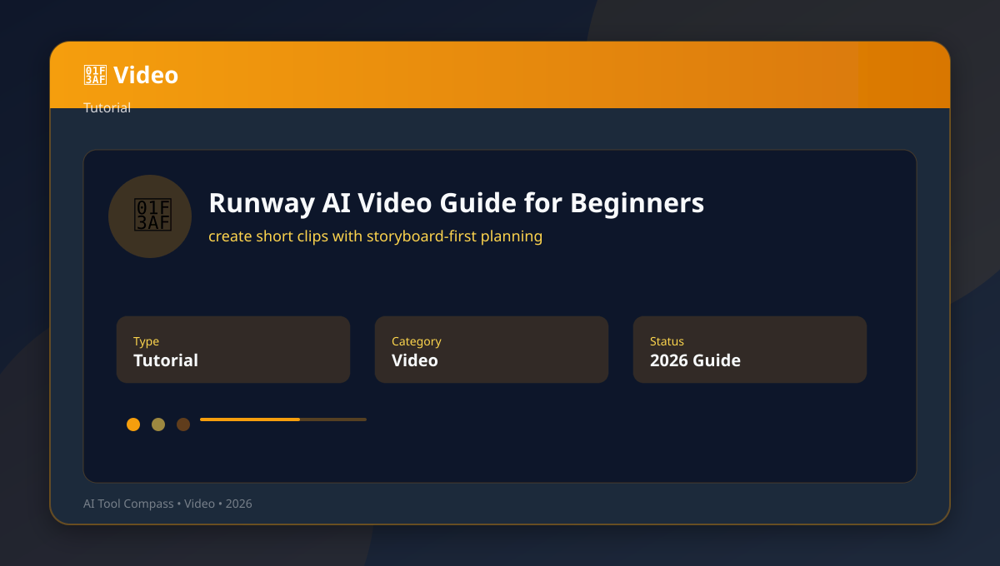
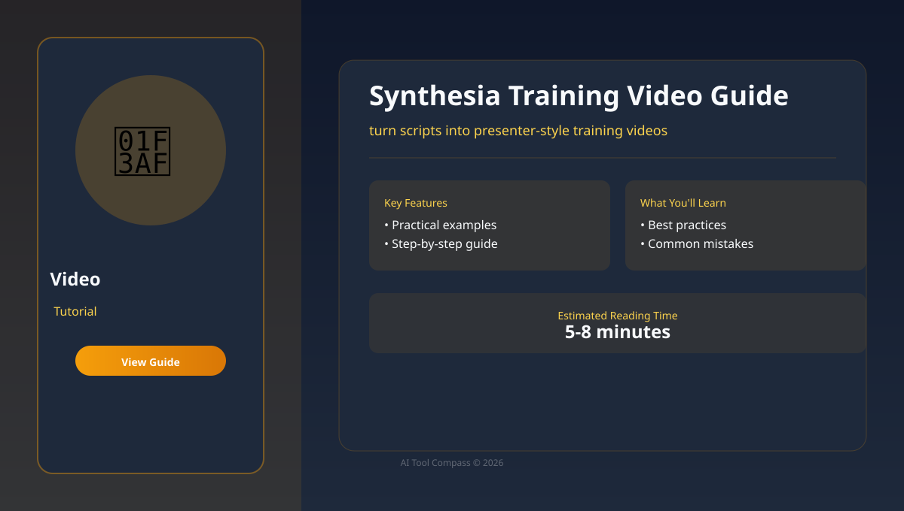
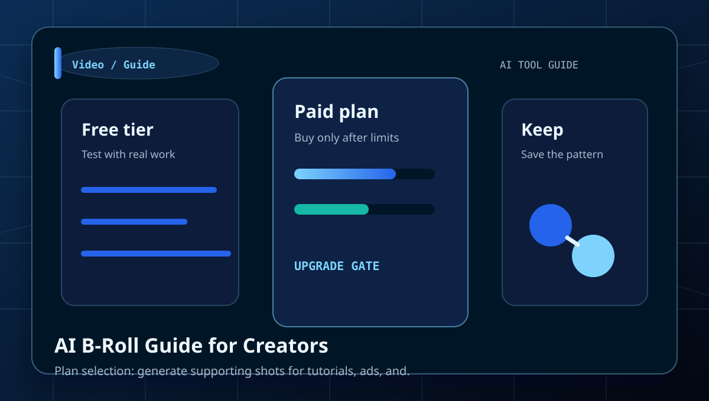
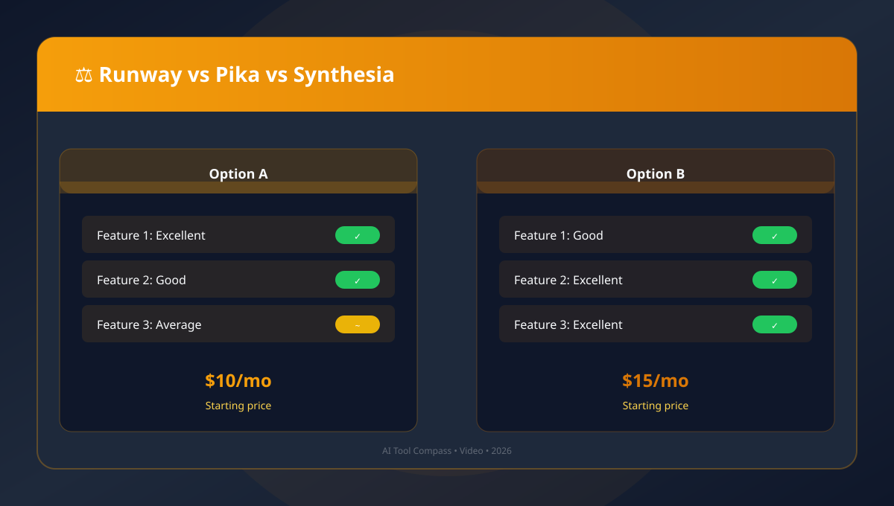
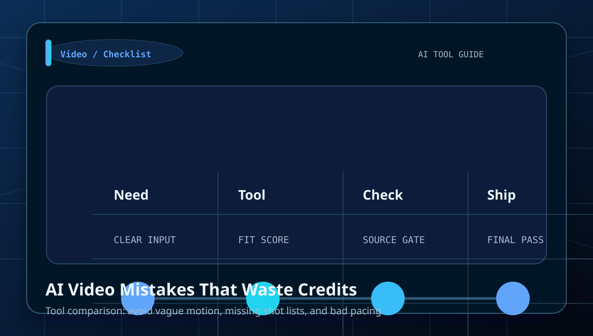
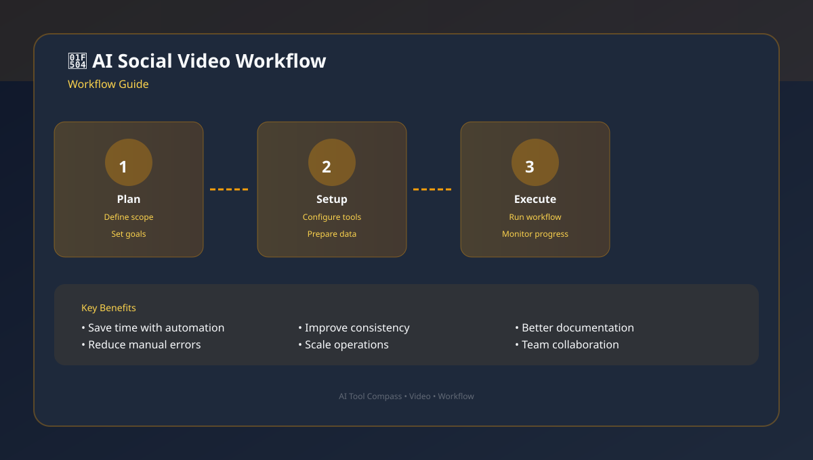
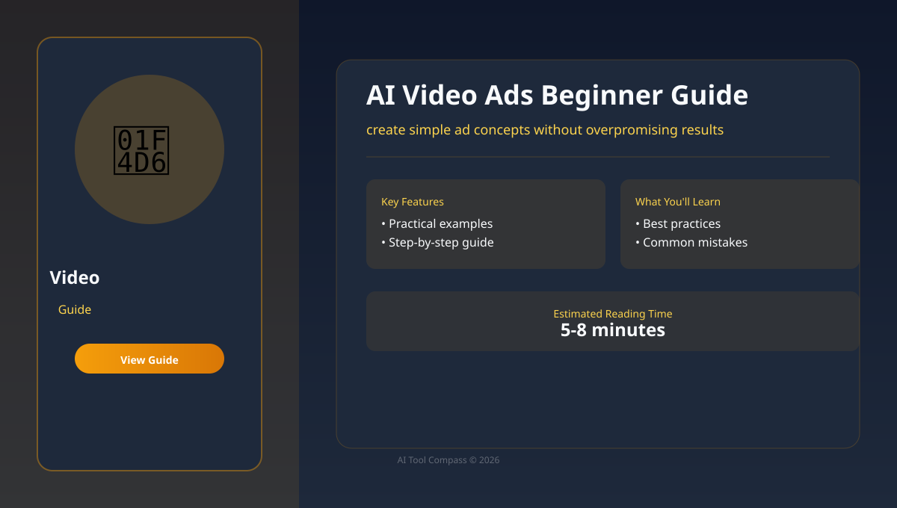

Category
AI Video Generation Guides
Tutorials, comparisons, prompt examples, and beginner workflows for short clips, explainers, avatar videos, captions, and storyboard-led production.
Best for
short clips, explainers, avatar videos, captions, and storyboard-led production.
Runway, Synthesia, Pika, Descript
Use the comparison tables to decide which tool fits each job.
Library
All AI Video Generation articles

Runway AI Video Guide for Beginners
Learn how to create short clips with storyboard-first planning with a clear workflow, examples, and beginner mistakes to avoid.

Best AI Video Generators: Beginner Comparison
Learn how to choose video tools by clip type and budget with a clear workflow, examples, and beginner mistakes to avoid.
AI Video Storyboard Workflow
Learn how to plan shots before spending generation credits with a clear workflow, examples, and beginner mistakes to avoid.

Synthesia Training Video Guide
Learn how to turn scripts into presenter-style training videos with a clear workflow, examples, and beginner mistakes to avoid.

AI B-Roll Guide for Creators
Learn how to generate supporting shots for tutorials, ads, and explainers with a clear workflow, examples, and beginner mistakes to avoid.

Runway vs Pika vs Synthesia
Learn how to compare cinematic clips, quick motion, and avatar videos with a clear workflow, examples, and beginner mistakes to avoid.
AI Video Script Prompts for Beginners
Learn how to write scripts that are easier to generate and edit with a clear workflow, examples, and beginner mistakes to avoid.

AI Video Mistakes That Waste Credits
Learn how to avoid vague motion, missing shot lists, and bad pacing with a clear workflow, examples, and beginner mistakes to avoid.

AI Social Video Workflow
Learn how to make short-form videos from one idea to final caption with a clear workflow, examples, and beginner mistakes to avoid.

AI Video Ads Beginner Guide
Learn how to create simple ad concepts without overpromising results with a clear workflow, examples, and beginner mistakes to avoid.